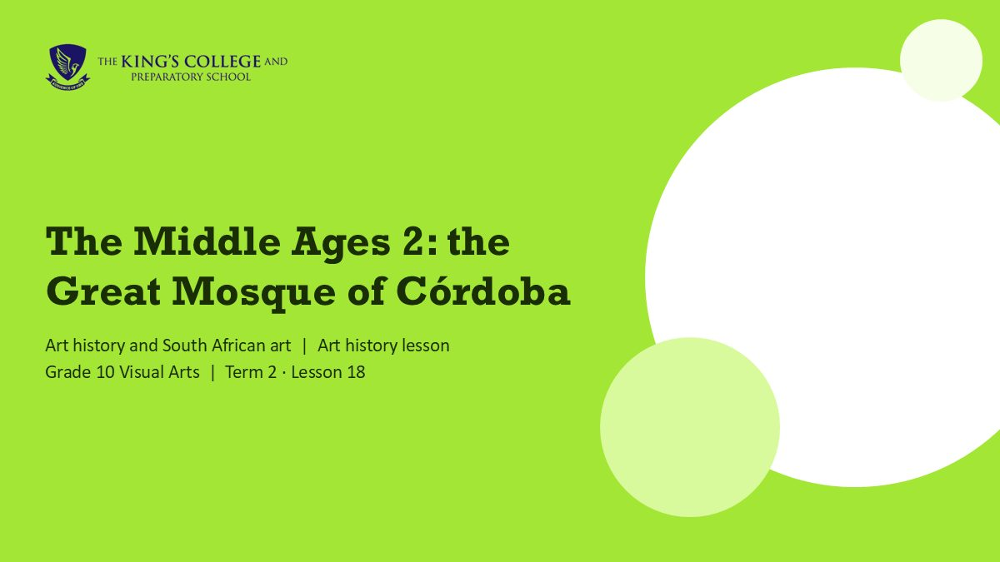

Term 2 · Lesson 18 · Art history lesson
The Middle Ages 2: The Great Mosque of Córdoba
Start Here
Today I Will
- Describe the main features of the Great Mosque of Córdoba
- Explain why Islamic religious decoration uses pattern rather than figures
- Construct a geometric pattern with compass and ruler
Can a pattern with no beginning and no end say something about an idea?
Words to Know
| Word | Meaning |
|---|---|
| Mosque | A building for Muslim prayer. |
| Mihrab | A niche in a mosque wall that shows the direction of Mecca. |
| Horseshoe arch | An arch whose curve continues past a semicircle, so it narrows slightly at the base like a horseshoe. |
| Arabesque | Flowing decoration based on plant forms, stems and leaves. |
| Geometric pattern | A design built from circles, lines and shapes that repeat according to strict rules. |
| Hypostyle hall | A large hall whose roof is held up by many rows of columns. |
Slides

Notes
Islamic architecture: the hypostyle hall, horseshoe arches, the mihrab and geometric ornament.
The Great Mosque of Córdoba
- Begun 784/785: Built under Abd al-Rahman I in Córdoba, Spain, and enlarged several times up to about 987.
- Hypostyle hall: A forest of columns fills the prayer hall, so worshippers can gather in long rows.
- Double-tier arches: Horseshoe arches below and round arches above, with alternating red brick and white stone voussoirs.
- Endless rhythm: The repeated arches seem to continue without end in every direction.
- The mihrab: Added in the 960s, decorated with gold mosaic and covered by an elaborate ribbed dome.
- Later history: After 1236 it became a cathedral, and a church was built in its centre in the 1500s.
Pattern Instead of Figures
| Type of decoration | What it does |
|---|---|
| Calligraphy: beautiful writing of verses from the Qur'an | Places the written word at the centre of decoration. |
| Geometric pattern: stars and polygons from circles | Repeats endlessly, suggesting the infinite and the unity of God in Islamic belief. |
| Arabesque: flowing stems and leaves | Brings growth and movement without depicting people or animals. |
| No figures in places of worship | Attention stays on prayer and the word rather than images. |
In Córdoba, repetition becomes rhythm and rhythm suggests the infinite.
Practical
You need: History booklet, VJ or paper, ruler, compass, pencil, fineliner, coloured pencils
A Geometric Pattern Inspired by Islamic Tilework
- Analyse first: in three sentences, describe how repetition and rhythm work in the Córdoba prayer hall.
- Draw a circle. Without changing the compass, step the radius around it to mark six points.
- Draw circles from each point to make a six-petal rosette, then join points to form a star or hexagon.
- Repeat the unit across a grid so the pattern could carry on in every direction.
- Ink the lines you want to keep and colour with two or three colours that repeat.
- Annotate: which principle of design is strongest in your pattern, and why?
Test Yourself
- Identify the niche in a mosque that shows the direction of Mecca.
- Explain why the arches of the Córdoba prayer hall create a sense of endless space.
- Compare the decoration of the Great Mosque of Córdoba with the mosaics of San Vitale.
Show answers
1. The mihrab. 2. Rows of identical double-tier arches with alternating red and white voussoirs repeat in every direction, creating rhythm with no clear end. 3. Córdoba uses geometric pattern, arabesque and calligraphy without figures; San Vitale uses figures of the emperor, empress and Christ on gold to teach and show authority.
Finished Early?
Build a pattern from a circle, as Islamic designers did.
- Draw a circle in your VJ with a compass.
- Keep the same radius and step it around the circle to mark six points.
- Join every second point to make a six-pointed star.
- Shade the star in two colours and note how repetition creates rhythm.